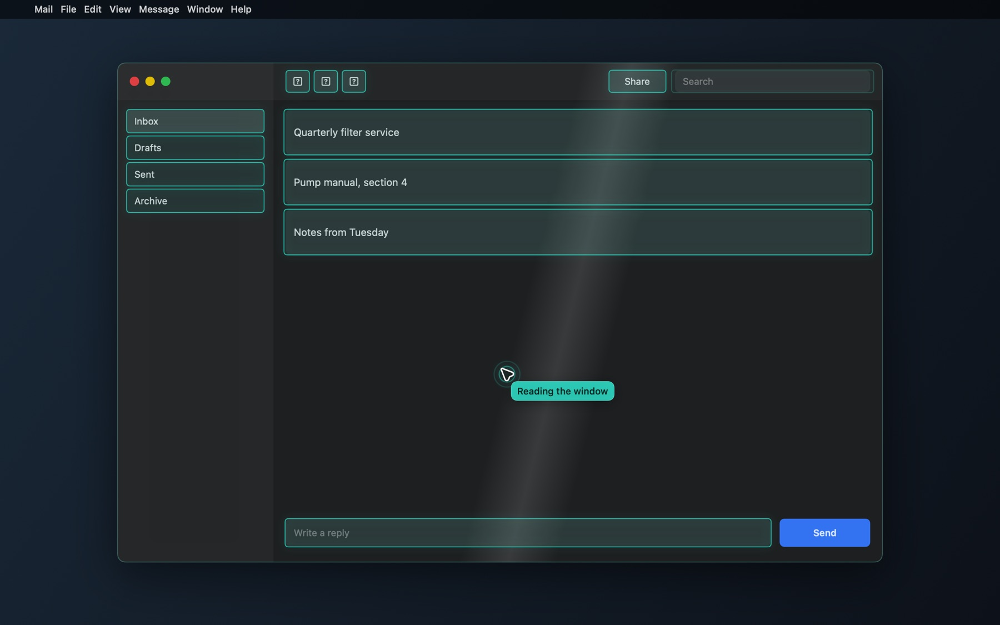
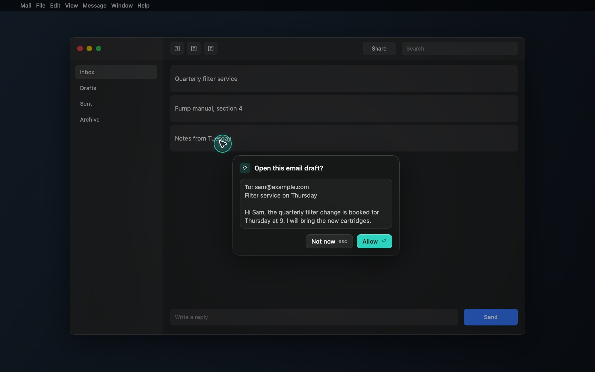
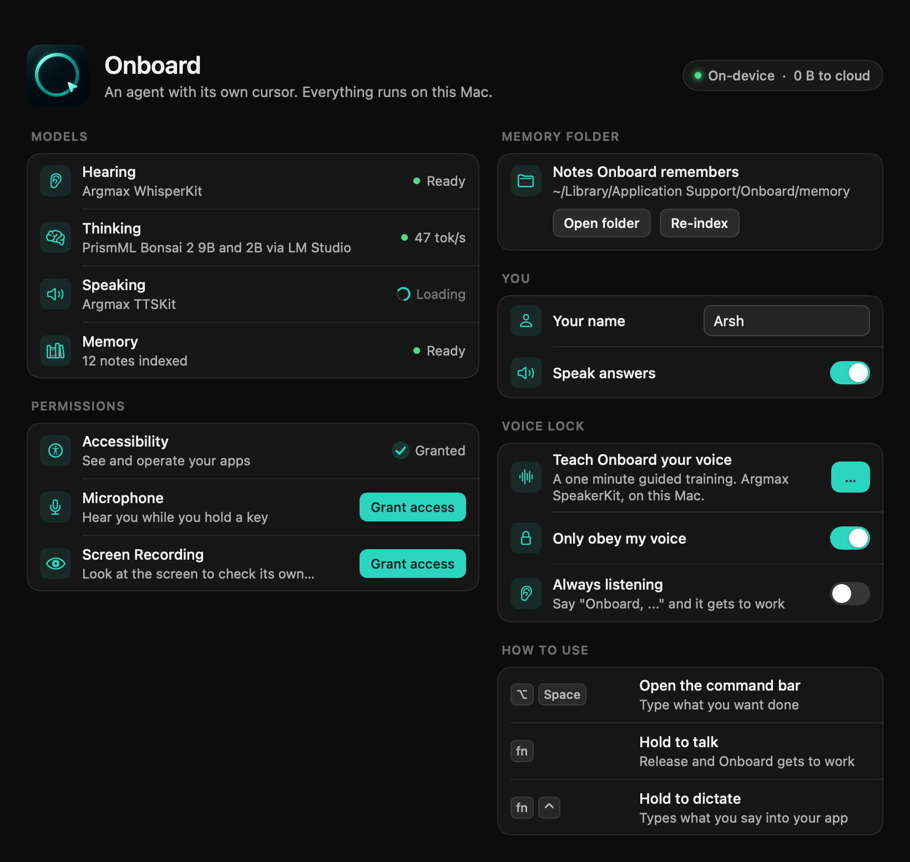
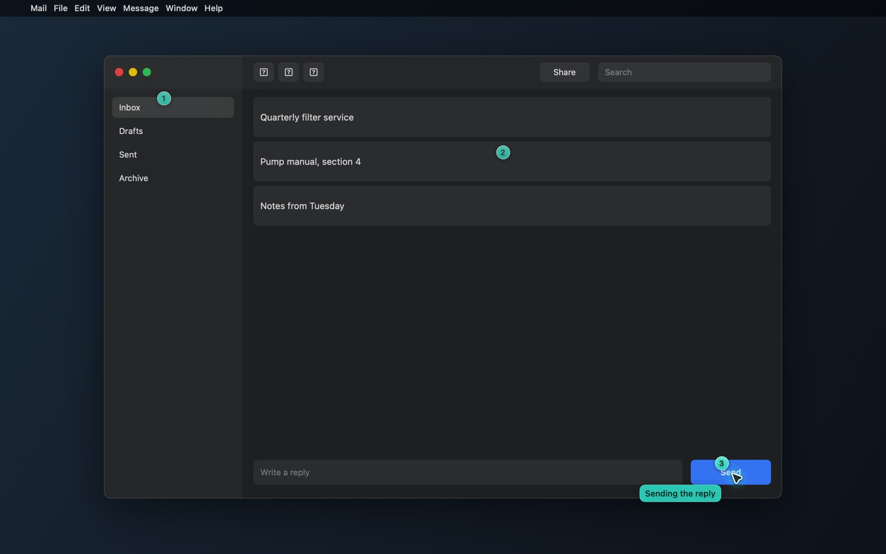

Say it. Your Mac does it.
Onboard is an agent with its own cursor that runs your Mac by voice. It reads the screen, clicks and types, then checks its own work. Everything runs on the laptop, with the WiFi off.
The cloud assistant, rebuilt on your Mac.
Assistants that can operate a computer send your screen and your voice to a data center. Onboard does the same job on the laptop itself. The first thing it does in the demo is turn the WiFi off.

It reads the window before it touches anything.
Onboard reads the app in front as an exact list of controls, then outlines what it found. When an app exposes nothing, it reads the text from a picture of the window instead.
- Every button, field and menu command, by name
- A fresh read of the screen at every step
- Pictures for charts, images and error dialogs

Its own cursor. Yours stays put.
A teal cursor glides to the exact control, says what it is about to do, then clicks and types through the task. Your pointer stays where you left it.
- Clicks, types, presses keys and chooses menu commands
- Reminders and calendar events in about 3 seconds
- Rewrites the text you selected, in place, in about 9 seconds


It checks its work before it says done.
Typed text is read back from the app. A number it never saw is refused before it is written. A request that is missing something gets a question, not a guess.
- Every step, how long it took, and the file an answer came from
- An action that failed is never tried twice
- Sending a message or moving files shows an approval card first



The whole Mac, by voice alone.
Say "Onboard" to start and "cancel" to stop. Answers are spoken. A one minute training teaches it your voice, and after that it turns everyone else away.
- Wake word, or hold fn and talk
- "Cancel" stops the run, the voice, and clears the screen
- A pill shows listening, thinking, speaking and done

WiFi off. Still works.
Thinking, hearing, speaking and voice recognition all run on the Mac. On a plane, in a lab with no signal, or with files that cannot leave the building, it keeps working.
- "Turn the WiFi off" is something you can ask it to do
- Your screen and your voice never leave the laptop
- Bonsai 2 generates at about 53 tokens per second
One request, start to finish.
Hold fn and talk, or say "Onboard" and keep your hands free. Pick a request to see what happens.
Hear
WhisperKit turns speech into text, on the Mac.
See
The front window, read as a list of controls.
Act
One action per step, with its own cursor.
Verify
Reads the result back before it says done.
Small models, shaped to the job.
Each part does one thing, and all of it runs in the room with you.
- Bonsai 2 9B plans each step, looks at pictures of the window, and judges whether the task is done
- Bonsai 2 2B gives quick answers
- WhisperKit hears you, and listens for the wake word
- SpeakerKit recognizes the owner's voice
- TTSKit speaks the answer
- Accessibility gives the screen as exact text
- Vision reads text from a picture when an app exposes nothing
- Overlay draws the teal cursor, the x-ray and approvals
- Your notes as plain .md and .txt files
- Embeddings computed on device
- Answers name the file they came from
In the build you can run today.
| Ask for | Say | What happens |
|---|---|---|
| Reminder | "Remind me to call the dentist tomorrow at 9." | Added to Reminders, in about 3 seconds |
| Calendar | "Add lunch with Jared to my calendar Friday at noon." | Added to your calendar, no app opened |
| Type | "Add a line that says pump A checked." | The cursor types it and reads it back |
| Rewrite | "Make this sound more professional." | Your selection is replaced in place |
| Notes | "What do my notes say about filter changes?" | Answers from your files and names the source |
| Look | "What's wrong in this chart?" | Answers from a picture of the window |
| Point | "Where is the save button?" | The cursor goes to it |
| Files | "Put the screenshots into a folder called Shots." | Moves them after you approve |
| Relay | "Ask this chat what the project does." | Types the question into the app in front and sends it |
| Dictate | Hold fn and control | Your words, typed into any app |
| WiFi | "Turn the WiFi off." | It does, and keeps working |
| Cancel | "Cancel." | Stops the run and the voice, clears the screen |
Say "Onboard" to begin.
Open source. Runs on a Mac with Apple silicon. Nothing leaves it.